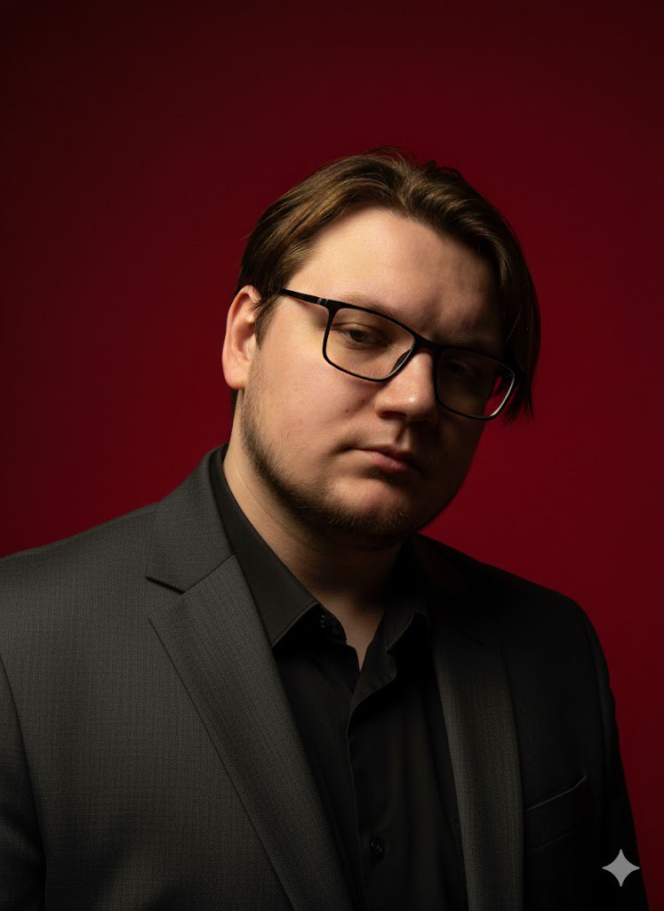
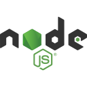
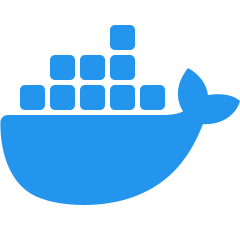
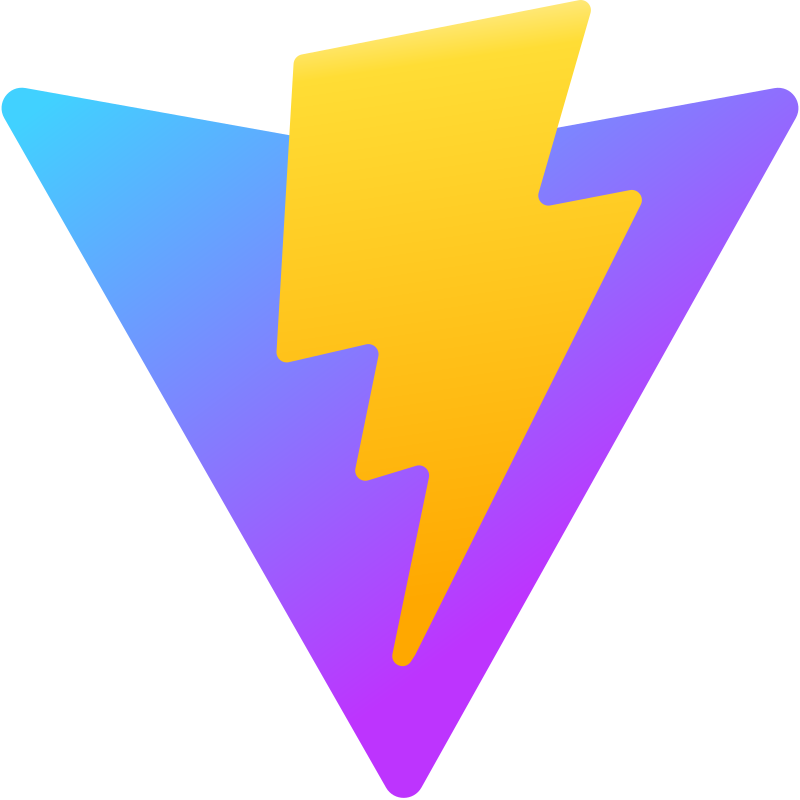
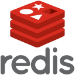

Current company · OwnershipExperience ↓
Sherpa RPA ecosystem
My responsibility spans product engineering and platform delivery across an enterprise RPA environment. I work across backend systems, infrastructure and AI-assisted workflows.
Full Stack Developer / DevOps / AI Engineering
5+ years building software across product interfaces, backend services, infrastructure and AI workflows.

I like systems that explain themselves, scale without drama and solve a real problem. From product UI to servers, databases and AI tooling.

AI nativeI work where engineering, operations and product meet. My strongest range is backend systems, DevOps, desktop tooling, data-heavy products and automation.
I also use AI as part of the engineering workflow: MCP integrations, LLM backends, code agents, prompt systems and local/private model infrastructure.
A capability map rather than a list of logo cards.



Public repositories show implementation patterns and workflows. Product details from Sherpa RPA remain presentation-level until source or documentation is approved for sharing.
A reproducible development environment for local LLM and editor workflows.
Editor extension integrating AI chat with HTTP/SOCKS proxy support.
Containerized mail infrastructure repository for deployment-oriented automation.
Current production work and open-source tools.
My responsibility spans product engineering and platform delivery across an enterprise RPA environment. I work across backend systems, infrastructure and AI-assisted workflows.
LLM serving and integration layer for applications. Responsible for the engineering path from service integration toward dependable production use.
Data and processing services for operational workloads, with attention to backend behavior and infrastructure boundaries.
Service coordination and execution-flow automation for practical, repeatable operations across the platform.
Custom theme for Visual Studio Code.
Community Sirus addon updater and desktop launcher.
JavaScript automation for FTP-based action workflows.
Windows HID control app for device profiles, OLED layouts and firmware-research tooling.
Fork of a customizable Windows 10/11 desktop environment.
From independent delivery to leading product engineering.
Building enterprise automation products, including AI Server, PD Server and an orchestration platform. Owning delivery across product, backend and infrastructure.
Led cross-functional delivery, built web systems and grew technical ownership in a fast-moving team.
Delivered custom software for small and medium businesses, spanning web, automation and infrastructure.